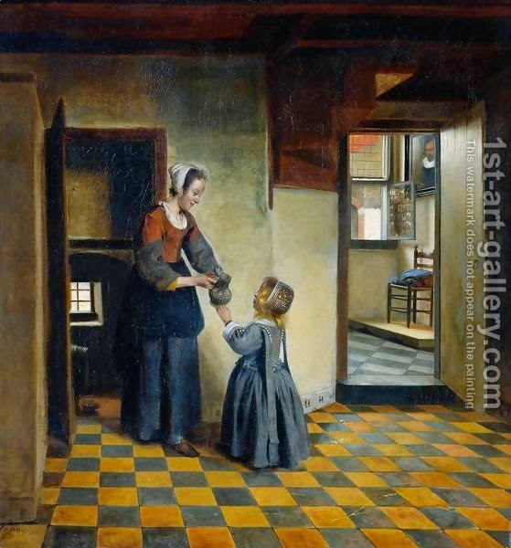

Yevamot 45 - A child from a mixed marriage
A child born from a Jewish woman and an idolater is a mamzer, since the Torah said " Do not intermarry with them ," implying that there is no legal significance in such marriage, and as a result the child is a mamzer. However, this is only one point of view.
The opposite point of view is that a mamzer is only born from a union of a married Jewish women and another Jewish man. This disagreement persisted for centuries. Rav, who lived somewhat later, declared this child kosher. A man who was a Sage and whose father was an idolater, said to Rav, "If such a child is kosher, give me your daughter in marriage." Rav refused, but the man kept insisting. Finally, Rav set his gaze on him, and the man died. The law was established, and there was no counter-example to contest it.
Art: Woman With A Child In A Pantry by Pieter De Hooch